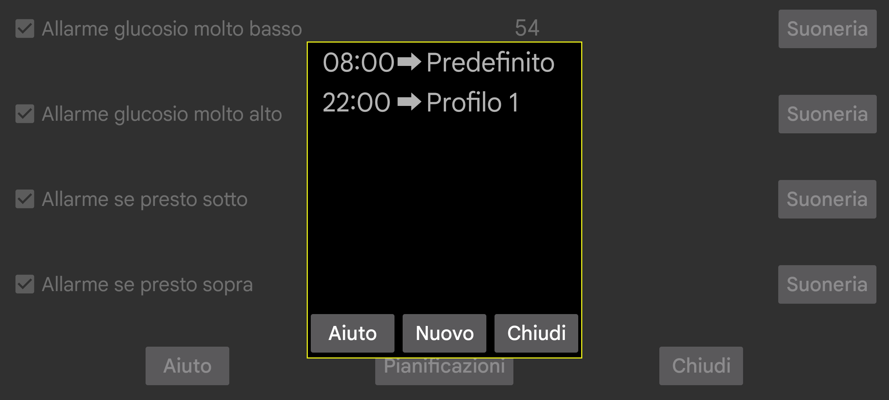
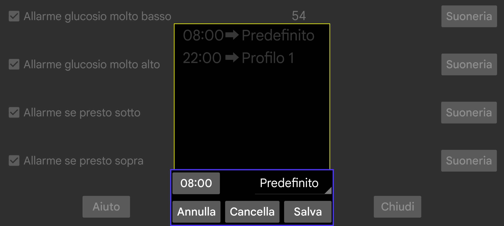

Programma i profili perché diventino attivi a un certo orario. Premi "Nuovo" per creare un'associazione tra un certo orario e un profilo. Juggluco passerà ogni giorno a quel profilo all'orario specificato. Puoi modificare un'associazione orario-profilo toccandola.
Tutte le impostazioni per Allarmi e Pronuncia sono specifiche di un profilo comune. Quale sia attivo viene mostrato sotto menu sinistro → Impostazione → Allarmi e menu centrale sinistro → Pronuncia. Inizialmente il profilo è "Default", puoi cambiarlo in "Profilo 1" o "Profilo 2" ecc. Quello che specifichi in Allarme e Pronuncia è specifico del profilo attivo.
Alcuni utenti hanno scritto che pensavano si potesse solo programmare il passaggio a un profilo e non terminarlo. Ma puoi semplicemente aggiungere un altro elemento che programma il passaggio al profilo predefinito, il che ha lo stesso effetto dell'aggiunta di un orario di fine.